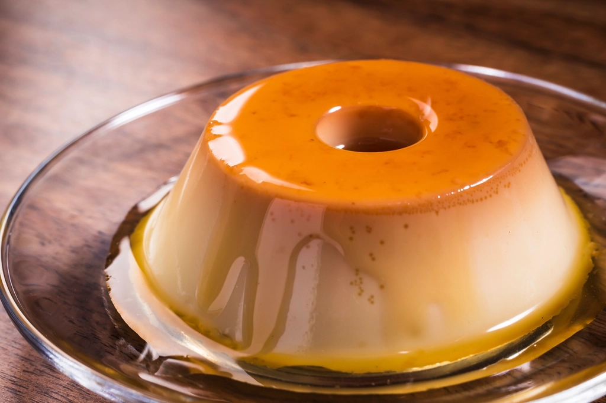
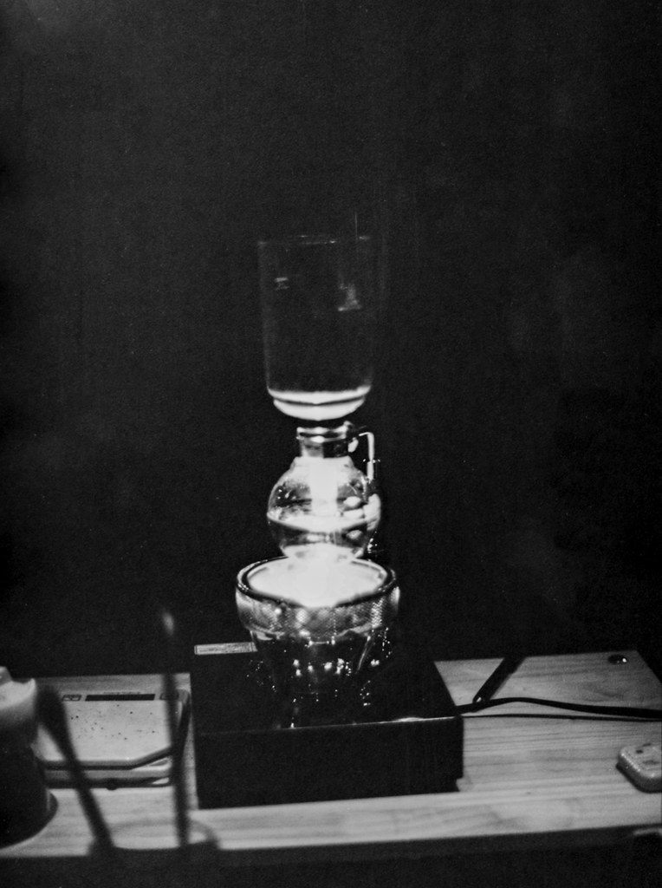
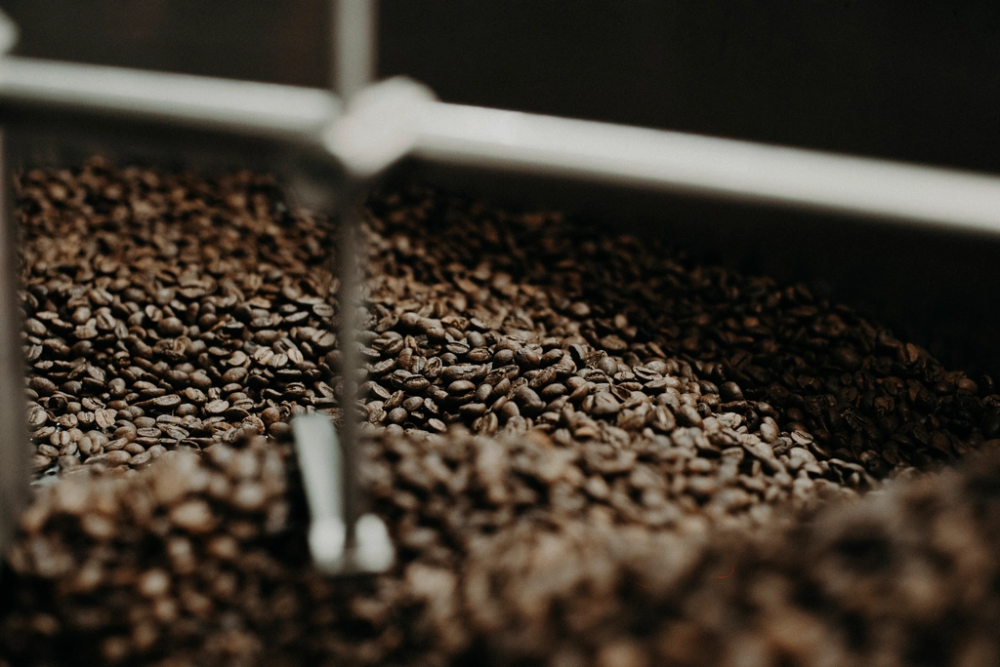
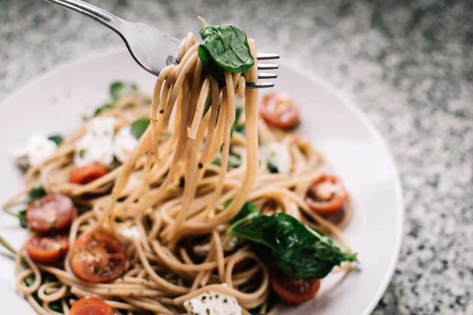

MENU
メニュー
名物のデザートから、サイフォンのコーヒー、軽食まで。価格は現在確認中のため、確定次第掲載いたします。
名物・デザート

木星プリン
ほろ苦いカラメルと、昔ながらの固め＆プルプルとした食感が魅力のプリン。店名の由来にもなった、当店いちばんの名物です。
価格：未定（要確認）クリームソーダ
キラキラ輝く甘いソーダに、まろやかなアイスクリームをのせて。見た目も味わいも楽しい一杯です。
価格：未定（要確認）ドリンク

ブレンドコーヒー（サイフォン式）
ご注文をいただいてから一杯ずつサイフォンで抽出。ほどよい酸味とまろやかな味わいをお楽しみいただけます。
価格：未定（要確認）アイスコーヒー
すっきりとした後味で、食事にもよく合う一杯です。
価格：未定（要確認）
カフェオレ
甘さの調整も可能です。お好みに合わせてお申し付けください。
価格：未定（要確認）軽食

ナポリタン
訪れた方の声でもよく登場する、軽食の一皿です。
価格：未定（要確認）その他軽食
上記以外のメニューにつきましては、現在情報を確認中です。お品書きの詳細はお電話にてお問い合わせください（要確認）。
- 価格・メニュー内容は変更になる場合がございます（要確認）。
- 季節限定メニューの有無については確認中です（要確認）。